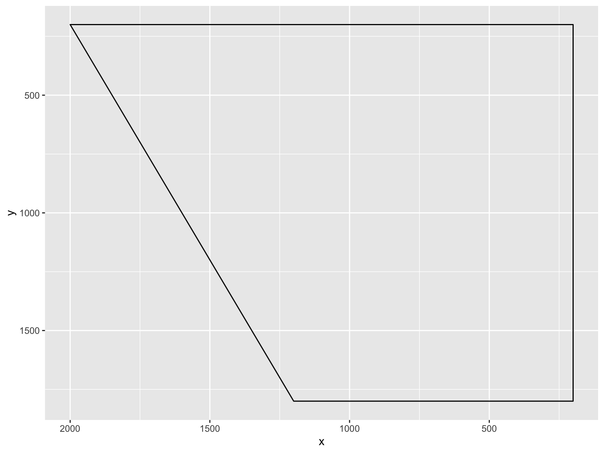

Today we will create our own vowel quadrilateral in order to give examples of (a) model vowel qualities in a given language variety, and (b) expected directions of change.
Often, when we want to explain the linguistic change in progress that we are studying, we like to use graphs such as the one below, which shows typical vowel qualities for Received Pronunciation:
But sometimes, the internet doesn’t have what you’re looking for, and you would really like to make your own… but how?? Well, this is what we will do today. It’s actually very easy!
First step, as always: load tidyverse.
library(tidyverse)First, we make the outline quadrilateral. Later, we will overlay this with our model vowel values.
To do this, decide where you want the corners of your quadrilateral to be – you may want to play around with this. I want my top left to be (1500, 200), top right to be (200, 200), bottom right (200, 2500), and bottom left (900, 2500). Remember that in typical vowel plots, x represents F2, y represents F1, and each axis gets flipped, so that the resulting quadrilateral represents a cross-section of the mouth.
x <- c(200, 1200, 2000, 200)
y <- c(1800, 1800, 200, 200)
quad <- as.data.frame(cbind(x, y))Now plot this:
quad_plot <- ggplot(quad)+scale_x_reverse()+scale_y_reverse()+geom_polygon(aes(x, y), colour="black", fill=NA)
quad_plot
Here we have the beginnings of a vowel quadrilateral.
Next, create some fake data:
f2 <- c(1800, 300, 1400, 900, 900, 600)
f1 <- c(300, 300, 900, 1500, 1600, 900)
vowel <- c("fleece", "goose", "face", "price", "mouth", "choice")
data <- as.data.frame(cbind(f2, f1, vowel))Check structure:
str(data)## 'data.frame': 6 obs. of 3 variables:
## $ f2 : Factor w/ 5 levels "1400","1800",..: 2 3 1 5 5 4
## $ f1 : Factor w/ 4 levels "1500","1600",..: 3 3 4 1 2 4
## $ vowel: Factor w/ 6 levels "choice","face",..: 3 4 2 6 5 1Convert the formants to numeric:
data$f2 <- as.numeric(as.character(data$f2))
data$f1 <- as.numeric(as.character(data$f1))Add these to the plot as points:
quad2 <- quad_plot+geom_point(data=data, aes(x=f2, y=f1), size=3)+theme_classic()
quad2Add labels:
quad3 <- quad2 + geom_text(data=data, aes(x=f2, y=f1, label=vowel), nudge_x=-60, vjust=-0.7, size=5)
quad3Get rid of axis numbering:
quad4 <- quad3 + theme(axis.line=element_blank(),axis.text.x=element_blank(),
axis.text.y=element_blank(),axis.ticks=element_blank(),
axis.title.x=element_blank(),
axis.title.y=element_blank(),legend.position="none",
panel.background=element_blank(),panel.border=element_blank(),panel.grid.major=element_blank(),
panel.grid.minor=element_blank(),plot.background=element_blank())
quad4What if we want to show the direction of change in progress? This is often the goal in using such diagrams, and it would be really nice to have change clearly represented in our graph.
We can do this quite easily.
Now we add this to the plot as another layer. You add each arrow as a separate “geom_curve” item:
#f2.old <- c(900, 900, 600)
#f1.old <- c(1500, 1600, 900)
#f2.new <- c(500, 1200, 500)
#f1.new <- c(1000, 1000, 500)
quad4 +
geom_curve(aes(x = 900, y = 1500, xend = 500, yend = 1000, colour = "red"), curvature=+0.5, arrow=arrow()) +
geom_curve(aes(x = 900, y = 1600, xend = 1300, yend = 1000, colour = "red"), curvature=-0.5, arrow=arrow()) +
geom_curve(aes(x = 600, y = 900, xend = 400, yend = 500, colour = "red"), curvature=+0.3, arrow=arrow())